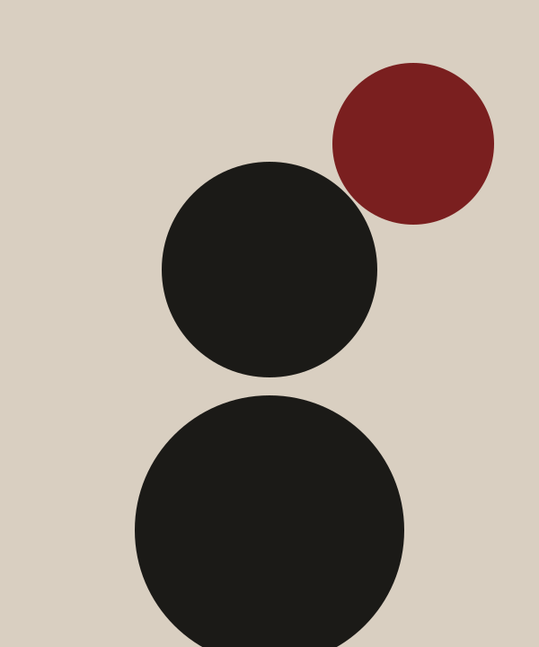
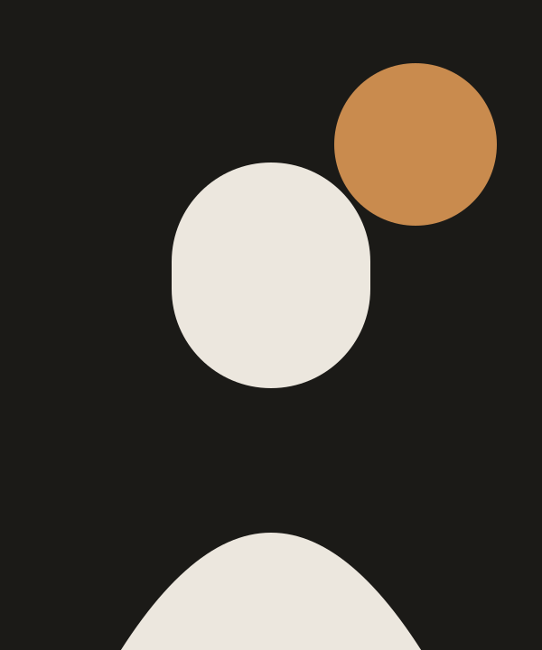
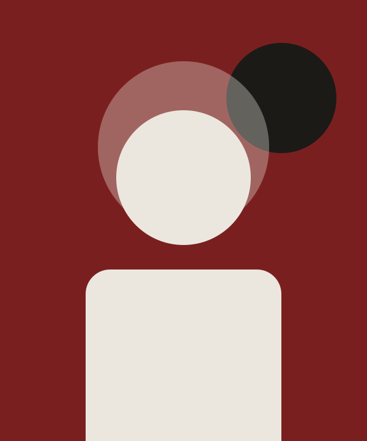
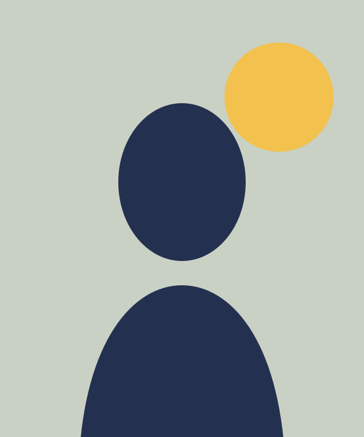

Brands with a point of view.
We help founders and growing companies work out what they stand for — then express it through identity, websites and content people remember.
The studio
Marrow & Field is a small, senior team. We work with a handful of clients at a time, so every project gets our full attention — from the first workshop to the final file.
- Strategy first. Design decisions trace back to a clear position.
- Plain language. No jargon, no 90-slide decks.
- Built to last. Systems your team can actually use.
01 — Services
What we do
Find the position only you can own.
Through research, interviews and workshops we define who you’re for, what makes you different and how to say it simply.
- Audience & competitor research
- Positioning & messaging
- Brand architecture
- Naming
An identity that feels inevitable.
Logos, type, colour and imagery designed as one flexible system — with guidelines your team will actually open.
- Logo & wordmark
- Typography & colour
- Art direction
- Brand guidelines
Websites that explain and convert.
Clear structure, considered design and fast, accessible builds that are easy for your team to update.
- Information architecture
- Web design
- Development
- Content migration
Words that sound like you.
A tone of voice and core messages that keep every email, post and pitch consistent.
- Tone of voice
- Website copy
- Launch campaigns
- Social templates
02 — Approach
How a project runs
- I.
Listen
Stakeholder interviews, audience research and an honest audit of where you are today.
Weeks 1–2 - II.
Define
A strategy workshop and a short, written brand platform everyone signs off.
Weeks 2–4 - III.
Make
Identity, website and content designed together, reviewed in focused rounds.
Weeks 4–10 - IV.
Launch
Guidelines, files, training and launch support so the brand lives on after we leave.
Weeks 10–12
Timelines are indicative and depend on project scope.
03 — Selected projects
Concept work
These projects are fictional briefs, created to show the studio’s range.
Concept project · Identity
Harbor & Hearth
A warm, confident identity for a neighbourhood bakery opening its second shop.
Brief
Feel crafted and local without looking old-fashioned; work on paper bags, signage and a simple ordering site.
Our response
A ring mark inspired by bread oven doors, an italic serif wordmark and a palette of crust tones and deep red.
Deliverables
Logo suite · Colour & type · Packaging templates · Signage concepts
Concept project · Identity & Web
Kiln
A quiet, gallery-like brand and online shop for a studio potter.
Brief
Let the work speak; make buying a one-off piece feel considered rather than transactional.
Our response
A minimal wordmark, dark product backdrops and a shop built around stories of each glaze.
Deliverables
Wordmark · Photography direction · E-commerce website
Concept project · Identity & Web
Northline
A calm, modern brand for a physiotherapy clinic focused on long-term recovery.
Brief
Move away from clinical blue; make booking a first appointment simple on mobile.
Our response
A rhythmic bar motif suggesting movement and progress, a soft green palette and a booking-first website.
Deliverables
Identity system · Website · Patient leaflets
Concept project · Strategy
Sola Co-op
Positioning and messaging for a community-owned solar co-operative.
Brief
Explain a complex ownership model to neighbours in plain language.
Our response
A brand platform built around “power you share”, a messaging hierarchy and a simple explainer structure.
Deliverables
Brand platform · Messaging guide · Explainer outline
Concept project · Strategy & Identity
Paper Moon
A playful identity for an independent bookshop with late-night events.
Brief
Stand out from chain stores and give the evening events their own personality.
Our response
A crescent symbol, a night-time palette and a flexible poster system for readings and launches.
Deliverables
Positioning · Identity · Event poster templates
Concept project · Strategy & Web
Atlas Legal
A clear, trustworthy web presence for a small law practice.
Brief
Help clients understand services and fees before the first call.
Our response
Plain-English service pages, transparent “what to expect” guides and a restrained, authoritative identity.
Deliverables
Content strategy · Website · Monogram
Industry focus
Sectors we know well
We work best with founder-led companies where brand decisions are made by the people doing the work.
- Food & hospitality
- Health & wellbeing
- Professional services
- Independent retail
- Culture & education
- Energy & climate
04 — The team
Small by design

Ife Adeyemi
Founder · Strategy

Daniel Mensah
Design director

Hauwa Bello
Writer · Voice

Sam Ortega
Digital lead
05 — FAQ
Good questions
What size of company do you work with?
Mostly founder-led businesses with between one and fifty people, often at a moment of change: a launch, a rebrand or a new market.
What does a typical project cost?
Every project is scoped individually. After a consultation we send a written proposal with a fixed fee for the agreed scope.
Can you work with our in-house team?
Yes. We often lead strategy and identity, then hand over a system for your team to run with.
Do you only do full rebrands?
No — focused projects such as a positioning sprint or a new website are common starting points.
What happens in the consultation?
A 30-minute call to understand your goals, timing and budget. If we’re not the right fit, we’ll say so.
Start a project
Let’s talk about what’s next for your brand.
Book a free 30-minute consultation. No pitch, no obligation — just an honest conversation about where you want to go.